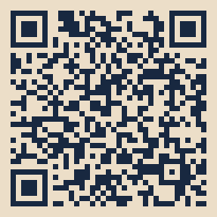

Set this board up on a desktop or laptop
On an iPhone: open this site in Safari, tap Share, then Add to Home Screen — the same way as Langenator. The crop table is easier on a larger screen, but the first look can start from the phone icon.
Ag Compass is built as a farmer decision board for a larger screen — the crop table, gauges, and print reports are easier to use on a computer than on a phone. This page is the destination a Saguaro founding-sponsor mailer QR would open. It is a pitch concept, not a live tracking system, and it does not collect a password or a payment.

Tracking code
Intended for an AgWest Farm Credit client mailer under a Saguaro Founding Sponsor package. AgWest has been pitched, not signed. Until a public host URL is chosen, the QR encodes the setup instructions and this code, not a live domain. This page is not counting clicks.
- Open this mailer at a desk, not as the only copy on a phone.
- On a Windows, Mac, or Chromebook computer, open Chrome, Edge, or Safari.
- Go to https://jplange66.github.io/agcompass/, or use the board on this copy of the site. A short link or QR should carry the tracking code AGW-SAG-2026.
- Bookmark the board. Use “Reset demo farm” if you want the Yuma lettuce / carrot / tomato review plan, then replace figures with your quotes and district bill.
- Print a farmer report for your records, or a banker report if you are walking into a lender conversation. The sponsor line and the tracking code print in the header and footer. They do not change the profit math.